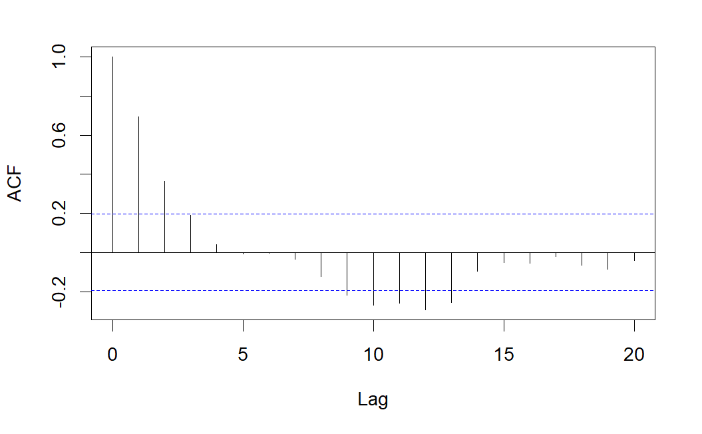
7 Tema 6. Modelos ARIMA
7.1 Introducción
Tanto en los métodos de análisis clásico de series como en los métodos de alisado exponencial, partimos de un esquema establecido a priori: descomposición de la serie en las componentes tendencia-ciclo, estacionalidad e irregular. Sin embargo, a principios de 1970 aparece un nuevo enfoque en el estudio de series temporales univariantes (debido a los estadísticos Box y Jenkins) y que se basa en estudiar la correlación de los datos. Este nuevo enfoque consiste en considerar que la serie temporal en estudio ha sido generada por un proceso estocástico. El objetivo en este caso es identificar el proceso estocástico que ha generado la serie, para posteriormente poder realizar predicciones.
Por tanto, se pretende construir un modelo que nos permita explicar la estructura y prever la evolución, a corto y medio plazo, de una serie temporal. La variable observada puede ser económica (I.P.C., demanda de un producto, existencias en un determinado almacén, etc…), física (temperatura de un proceso, velocidad del viento en una central eólica, concentración en la atmósfera de un contaminante, etc.) o social (número de nacimientos, votos de un determinado partido, etc.).
Recordemos que la definición de serie temporal (una sucesión de valores de una variable obtenidos de manera secuencial en el tiempo) coincide con el concepto de realización de un proceso estocástico. Es decir, los datos \({x_1, x_2, \dots, x_n}\) de una serie temporal observados en \(n\) instantes de tiempo pueden interpretarse como una trayectoria o realización particular de un proceso estocástico \((X_t)_{t=1,2,\dots,n}\). Teniendo en cuenta esta interpretación, la teoría de los procesos estocásticos será aplicable al estudio de series temporales.
Si dispusiéramos de muchas realizaciones de un mismo proceso estocástico, es decir, de muchas series temporales generadas por un mismo proceso, podríamos intentar obtener la función de distribución de cada variable \(X_i\) del proceso, aunque no sería sencillo. En general hay que contentarse con conocer algunas características del proceso como la función de medias, la función de varianzas, etc. Supongamos, por ejemplo, que disponemos de las siguientes series que han sido generadas por un mismo proceso:
\[ \begin{array}{c} \text{Serie 1: } \{x_{11}, x_{12}, \ldots, x_{1n}\} \\[6pt] \vdots \\[6pt] \text{Serie k: } \{x_{k1}, x_{k2}, \ldots, x_{kn}\} \end{array} \]
entonces podemos estimar la media de cada variable \(X_i\) del proceso mediante:
\[ \begin{array}{c} \widehat{\mu}_1 = \dfrac{x_{11} + x_{21} + \ldots + x_{k1}}{k} \\[6pt] \vdots \\[6pt] \widehat{\mu}_n = \dfrac{x_{1n} + x_{2n} + \ldots + x_{kn}}{k} \end{array} \]
No obstante, nos encontraremos con una importante restricción al trabajar con series temporales: en muchos casos, la serie observada es la única realización accesible del proceso estocástico que la ha generado. Por ejemplo, en la serie de turistas que visitan España mes a mes o en la cantidad de unidades producidas diariamente en una fábrica, solo disponemos de una única trayectoria concreta del fenómeno, sin acceso a múltiples realizaciones independientes del mismo proceso.
Este problema, que a simple vista parece insalvable, requiere que apliquemos ciertas restricciones e hipótesis al tipo de proceso estocástico que genera la serie en estudio. Específicamente, necesitaremos que el proceso estocástico sea estacionario (al menos en sentido débil) y ergódico. Estas condiciones garantizarán que los datos observados a lo largo de un período de tiempo suficientemente amplio sean representativos del comportamiento probabilístico del proceso subyacente, y que el conocimiento obtenido de los datos actuales sea útil para comprender su comportamiento en momentos futuros.
7.2 Procesos débilmente estacionarios. El correlograma.
Tal como estudiamos en el Tema 1, un proceso estocástico \(\{X_t\}_{t=1,2,\ldots}\) se dice estacionario en sentido débil (o débilmente estacionario) si cumple que su función de medias es constante, y su función de covarianzas sólo depende del retardo o salto temporal, es decir:
\(\mu_X(t)=\mu\) para cierta constante \(\mu\),
\(C_X(t,t+k)=\gamma_k\), para cierta cantidad \(\gamma_k\) que sólo depende de \(k\) (y no del instantes \(t\)).
Cuando el proceso sea débilmente estacionario, se cumplirá además que la función de varianzas es constante en el tiempo, y que la función de correlaciones sólo depende del retardo o salto temporal, es decir:
\(\sigma_X(t)=\sigma\) para cierta constante \(\sigma\),
\(\rho_X(t,t+k)=\rho_k\), para cierta cantidad \(\rho_k\) que sólo depende de \(k\) (y no del instantes \(t\)).
En el estudio de procesos estocásticos estacionarios, la función de correlaciones (o autocorrelaciones), denotada como \(\rho_X\), es de especial importancia. Como mencionamos, cuando el proceso es débilmente estacionario, esta función depende únicamente del retardo \(k\), tomando un valor \(\rho_k\) que varía sólo en función de este desfase temporal y no del instante específico. La representación gráfica de la función \(\rho_k\) en relación con el retardo \(k\) se denomina correlograma (o autocorrelograma).
Observar que el correlograma, tal y como se ha definido, sólo tiene sentido para procesos débilmente estacionarios.
En el contexto de procesos estocásticos débilmente estacionarios, aunque dispongamos de una única realización (una única serie temporal), podemos obtener una estimación de las características del proceso del siguiente modo. Si denotamos por \(\{x_1,x_2,...,x_n\}\) a la única serie temporal observada del proceso, se tiene:
- Estimación de la función de medias constante:
\[ \widehat{\mu }=\overline{x}=\dfrac{x_1+x_2+...+x_n}n \]
- Estimación de la función de varianzas constante:
\[ \widehat{\sigma ^2}=s_x^2=\dfrac{\sum_{t=1}^n\left( x_t-\overline{x}\right) ^2}n \]
- Estimación de la función de covarianzas:
\[ \widehat{\gamma }_k=\dfrac{\sum_{t=1}^{n-k}\left( x_t-\overline{x} \right) \left( x_{t+k}-\overline{x}\right) }n \]
- Estimación de la función de correlaciones:
\[ \widehat{\rho }_k=\dfrac{\sum_{t=1}^{n-k}\left( x_t-\overline{x} \right) \left( x_{t+k}-\overline{x}\right) }{\sum_{t=1}^n\left( x_t- \overline{x}\right) ^2} \]
Si buscamos el comportamiento de estacionariedad para las series temporales, necesitaremos ver gráficas que se mantienen en un nivel constante con unas pautas estables de oscilación. En la figura se muestra un ejemplo de serie estacionaria, realización de un proceso estocástico estacionario.
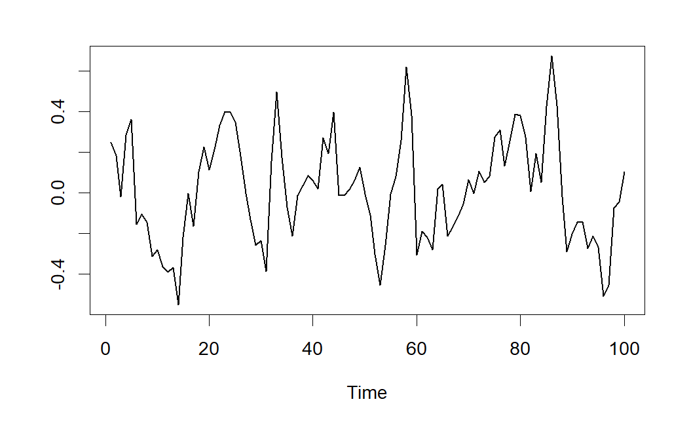
En la práctica del análisis de series encontraremos series con problemas de estacionariedad que afectan a cualquiera de sus parámetros básicos, siendo los más frecuentes las inconstancias en media y varianza. En la figura se muestran dos ejemplos de series no estacionarias, la primera en media y la segunda en varianza.
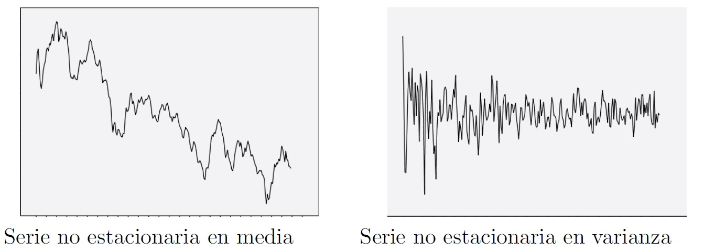
Además de ser estacionario, el proceso estocástico ha de ser ergódico. Este concepto es algo más complejo, pero de forma intuitiva puede entenderse como la propiedad que permite que las medias y otras características del proceso puedan estimarse a partir de una sola realización temporal. Una condición necesaria para que un proceso sea ergódico es que \(\lim_{k\rightarrow \infty }\rho_k=0\), es decir, que las autocorrelaciones sean nulas para retardos altos. Esto quiere decir, que para valores altos del retardo habrá poca dependencia entre las observaciones. En caso contrario los valores de la serie alejados en el tiempo estarían altamente correlados y por tanto no se podrían obtener estimaciones consistentes de la función de medias, varianzas, etc.
En adelante, supondremos siempre que trabajamos con procesos ergódicos y nos centraremos en estudiar si el proceso que ha generado la serie es o no estacionario. Llegados a este punto, cabría preguntarse si la estacionariedad resulta una condición muy restrictiva, es decir, si en la práctica existen muchas series que proceden de procesos estocásticos no estacionarios. En este sentido podemos decir que, aunque trabajaremos con series no estacionarias, en general se podrá conseguir la estacionariedad mediante una transformación sencilla en los datos.
De hecho, las dos transformaciones más usuales para conseguir la estacionariedad de una serie son:
Realizar una transformación de Box-Cox (cuando la serie no es constante en varianza), siendo la más frecuente el tomar logaritmos neperianos en los datos.
Tomar diferencias en la serie (cuando la serie no es constante en media): si la tendencia es lineal se tomarán diferencias de orden 1, si la tendencia es cuadrática se tomarán diferencias de orden 2, etc. Los procesos que no son estacionarios, pero que se convierten en estacionarios al tomar diferencias, se denominan procesos integrados.
Finalizamos la sección indicando una propiedad para procesos estacionarios fácil de demostrar.
Proposición 7.1 Si \(\{X_t\}_t\) es un proceso estacionario, entonces el proceso primera diferencia [ Z_t=X_t-X_{t-1} ] también sigue siendo estacionario.
7.3 Procesos lineales
Los procesos lineales son una clase particular de procesos estocásticos que incluyen a los siguientes tipos de procesos, que estudiaremos con más detalle en las próximas secciones:
Proceso puramente aleatorios o ruido blanco gaussiano (también suele denominarse simplemente ruido blanco).
Procesos autorregresivos, \(AR(p)\).
Procesos de medias móviles, \(MA(q)\).
Procesos autorregresivos y de medias móviles, \(ARMA(p,q)\).
Procesos autorregresivos y de medias móviles no estacionarios, \(ARIMA(p,d,q)\).
7.4 Proceso de ruido blanco gaussiano
Recordemos que un ruido blanco gaussiano es un proceso estocástico \((\varepsilon _t)_{t=1,2,\dots,n}\) verificando que \(\varepsilon _t\sim N(0,\sigma^2)\) para todo \(t=1,2,\dots,n\) e independientes entre sí.
Podemos interpretar un ruido blanco gaussiano como una sucesión de valores sin relación alguna entre ellos, oscilando en torno al cero dentro de un margen constante. En este tipo de procesos, conocer valores pasados no proporciona ninguna información sobre el futuro ya que el proceso es “puramente aleatorio”.
En el caso del proceso de ruido blanco gaussiano, los correlogramas simple y parcial no presentarán ninguna correlación significativa (salvo para el retardo 0, donde la correlación es de 1). A continuación se muestra un ejemplo de ruido blanco gaussiano y su correlograma simple.
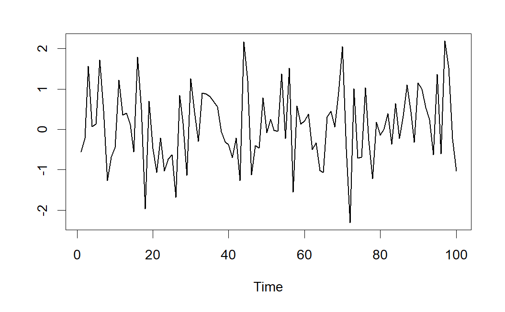
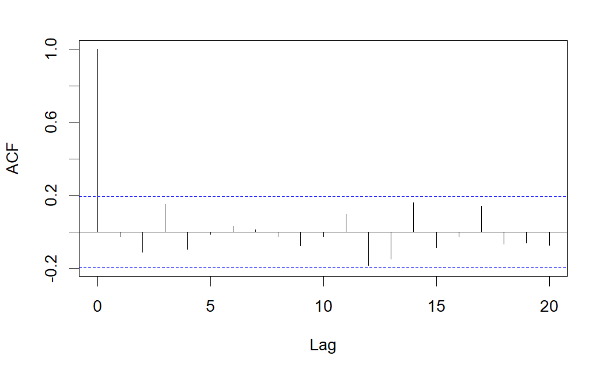
7.5 Modelos Autorregresivos de orden p, AR(p)
Al representar la influencia de hechos pasados sobre el presente (y en consecuencia sobre el futuro) de un proceso estocástico, podemos considerar diferentes expresiones. Una de ellas consiste en colocar el valor actual del proceso dependiente linealmente de valores pasados del propio proceso, más una perturbación aleatoria que se comporta como un ruido blanco gaussiano:
\[ X_t=\delta +a_1X_{t-1}+a_2 X_{t-2}+...+a_p X_{t-p}+\varepsilon_t \tag{7.1}\]
donde \(\delta\) representa una constante y \(\varepsilon _t\) es un ruido blanco gaussiano, es decir, las variables \(\varepsilon_t\) son i.i.d. y todas ellas tienen distribución \(N(0,\sigma^2)\).
Esta formulación se denomina autorregresiva porque en cierto modo es un modelo de regresión del proceso sobre si mismo.
Observando el modelo propuesto en (Ecuación 7.1), si lo consideramos estacionario, con \(\mathbb{E}(X_t)=\mu ,\) se tiene que:
\[ \mu =\delta +a_1\mu +a_2\mu +..+a_p\mu \Rightarrow \mu =\frac \delta {1-a_1-a_2-..-a_p} \]
por consiguiente, para que exista la media, necesitamos que:
\[ a_1+a_2+..+a_p\neq 1 \]
Sin perder generalidad, en el desarrollo del apartado supondremos que el proceso está centrado, esto es, \(\mu =\delta =0\).
Un elemento que se suele utilizar para expresar la formulación de los procesos lineales es el llamado operador de retardo B. Tal operador actúa sobre un término de un proceso estocástico reduciendo el índice temporal en una unidad:
\[ B\text{ }X_t=X_{t-1}\Rightarrow B^k\text{ }X_t=X_{t-k} \]
y por tanto, un proceso autorregresivo de orden \(p\) puede expresarse en la forma:
\[ (1-a_1B-a_2B^2-...-a_pB^p)X_t=\varepsilon _t \]
o equivalentemente:
\[ \left[ a_p(B)\right] X_t=\varepsilon _t \]
donde
\[ a_p(x)=1-a_1\cdot x-a_2\cdot x^2-...-a_p\cdot x^p \]
se denomina polinomio característico del proceso autorregresivo.
Como propiedad, destacaremos que la condición necesaria y suficiente para que un proceso AR(p) sea estacionario es que las raíces de su polinomio característico estén fuera del círculo unidad del plano complejo.
Los dos problemas fundamentales que nos presentan los procesos autorregresivos son:
Determinación del orden \(p\) del modelo autorregresivo.
Una vez fijado éste, determinar los parámetros \(a_i\) del modelo.
7.5.1 Determinación del orden de la autorregresión
Determinar el orden de un proceso autorregresivo a partir de su función de autocorrelación es difícil. En general esta función es una mezcla de decrecimientos exponenciales y sinusoidales, que se amortiguan al avanzar el retardo, y no presenta rasgos fácilmente identificables con el orden del proceso. Para resolver este problema se introduce la función de autocorrelación parcial.
Si comparamos un AR(1) con un AR(2) vemos que aunque en ambos modelos cada observación está relacionada con las anteriores, el tipo de relación entre observaciones separadas dos períodos, es distinto. En el AR(1) el efecto de \(X_{t-2}\) sobre \(X_t\), es siempre a través de \(X_{t-1}\), y no existe efecto directo entre ambas. Conocido \(X_{t-1}\), el valor de \(X_{t-2}\) es irrelevante para prever \(X_t\), es decir, tenderemos que
\[ \rho(X_{t},X_{t-2}|X_{t-1})=0, \]
donde la notación anterior se interpreta como la correlación entre las variables \(X_t\) y \(X_{t-2}\) eliminando el efecto de \(X_{t-1}\).
Esta dependencia puede ilustrarse con el esquema siguiente:
\[ AR(1):X_{t-3}\rightarrow X_{t-2}\rightarrow X_{t-1}\rightarrow X_t \]
donde las flechas muestran una relación de dependencia directa.
Sin embargo, en un AR(2) además del efecto de \(X_{t-2}\) que se transmite a \(X_t\) a través de \(X_{t-1}\), existe un efecto directo de \(X_{t-2}\), sobre \(X_t\), por lo que, en general,
\[ \rho(X_{t},X_{t-2}|X_{t-1})\neq 0. \]
Por otro lado, conocidos \(X_{t-1}\) y \(X_{t-2}\), el valor de \(X_{t-3}\) es irrelevante para predecir \(X_t\), es decir,
\[ \rho(X_{t},X_{t-3}|X_{t-1},X_{t-2})=0. \]
En este caso, podemos escribir:
\[ AR(2):\quad \begin{array}{cccc} \Rsh & -\longrightarrow - & \downarrow & {}\\[8pt] X_{t-3} & \rightarrow X_{t-2} & \rightarrow X_{t-1} & \rightarrow X_t\\[8pt] {} & \downarrow & -\longrightarrow - & \uparrow \end{array} \]
La función de autocorrelación simple tiene sólo en cuenta que \(X_t\) y \(X_{t-2}\) están relacionadas en ambos casos, pero si medimos la relación directa entre \(X_t\) y \(X_{t-2}\), esto es, eliminando el efecto debido a \(X_{t-1}\), encontraremos que para un AR(1) este efecto es nulo y para un AR(2) no.
En general, un AR(p) presenta efectos directos de observaciones separadas por 1, 2, …, p retardos y los efectos directos para retardos superiores son nulos, es decir,
\[ \rho(X_t,X_{t-k}|X_{t-1},X_{t-2},\ldots,X_{t-k+1})\neq 0\quad\mbox{ si }k\le p, \]
\[ \rho(X_t,X_{t-k}|X_{t-1},X_{t-2},\ldots,X_{t-k+1})= 0\quad\mbox{ si }k> p. \]
Esta idea es la clave para la utilización de la función de autocorrelación parcial, entendiendo el coeficiente de autocorrelación parcial de orden k como una medida de la relación lineal entre observaciones separadas k períodos con independencia de los valores intermedios. De este concepto se deduce que un proceso \(AR(p)\) tendrá los \(p\) primeros coeficientes de autocorrelación parcial distintos de cero. Llamaremos autocorrelograma parcial a la representación de los coeficientes de correlación parcial en función del retardo. Por tanto, para determinar el orden de un modelo autorregresivo nos fijaremos en el correlograma parcial: el número de coeficientes que sean “significativamente” distintos de cero indica el orden del proceso \(AR\).
A continuación mostramos cómo serían los autocorrelogramas simples y parciales teóricos de modelos \(AR(1)\) y \(AR(2)\).
Modelos AR(1)
- Con el parámetro \(a_1 > 0\):
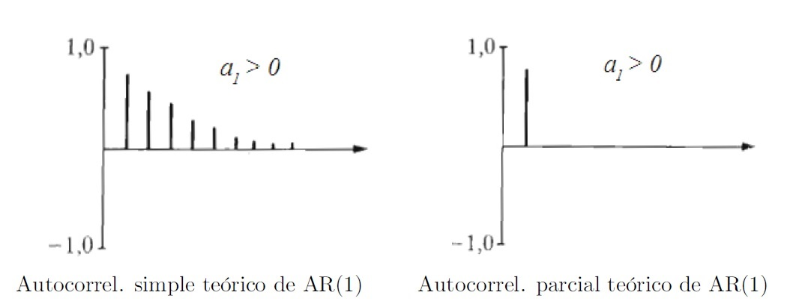
- Con el parámetro \(a_1 < 0\):
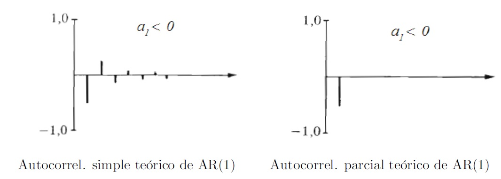
Modelos AR(2)
- Con los parámetros \(a_1 > 0\), \(a_2 > 0\):
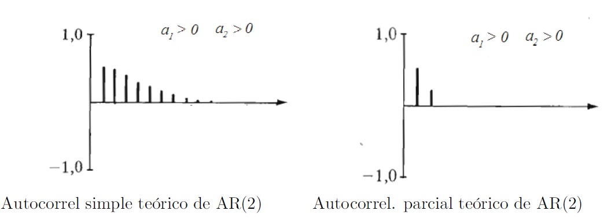
- Con los parámetros \(a_1 < 0\), \(a_2 > 0\):
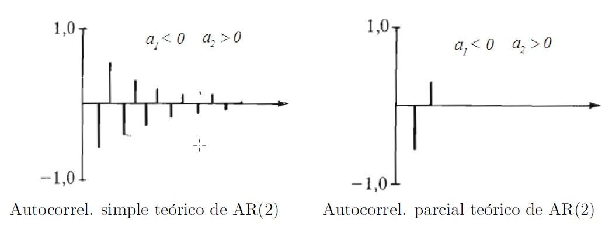
- Con los parámetros \(a_1 > 0\), \(a_2 < 0\):
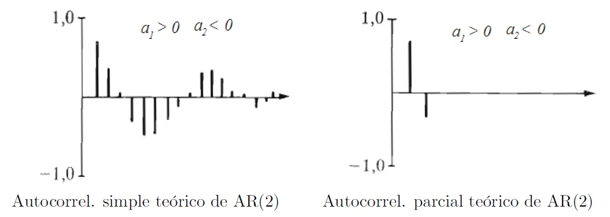
- Con los parámetros \(a_1 < 0\), \(a_2 < 0\):
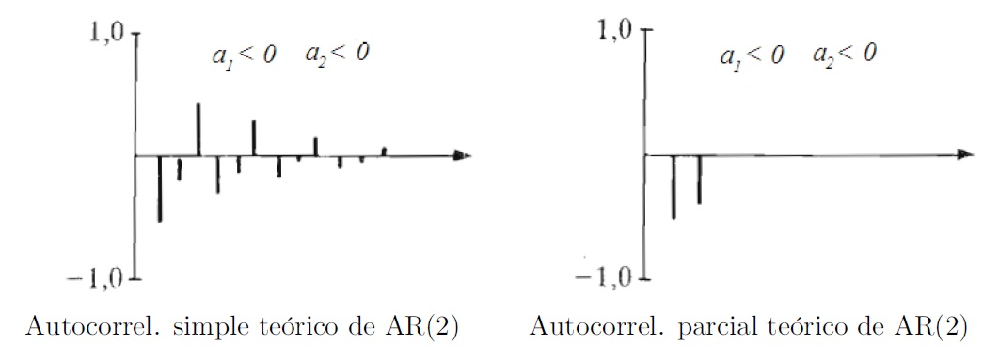
7.5.2 Estimación de los parámetros del modelo
En esta sección nos centraremos en la segunda de las cuestiones: estimar los parámetros del modelo. Así, si consideramos un proceso \(AR(p)\) centrado:
\[ X_t=a_1X_{t-1}+a_2X_{t-2}+...+a_pX_{t-p}+\varepsilon _t \tag{7.2}\]
multiplicando por \(X_{t-j}\), con \(j=0,1,2,...,p\), y tomado esperanzas
\[ \mathbb{E}(X_tX_{t-j})=a_1\mathbb{E}(X_{t-1}X_{t-j})+a_2\mathbb{E}(X_{t-2}X_{t-j})+...+a_p\mathbb{E}(X_{t-p}X_{t-j})+\mathbb{E}(\varepsilon _tX_{t-j}) \tag{7.3}\]
Obsérvese que al ser \(\mathbb{E}(\varepsilon _t\varepsilon _{t-j})=0\) para \(j>0\), se tiene que \(\mathbb{E}(\varepsilon_tX_{t-j})=0\) para \(j>0\) y \(\mathbb{E}(\varepsilon_t X_t)=\sigma_{\varepsilon}^2\), donde \(\sigma_{\varepsilon}^2\) denota la varianza común de las perturbaciones \(\epsilon_t\). Por tanto, reescribiendo (Ecuación 7.3) en términos de covarianzas (hemos supuesto proceso de media cero), tendremos las ecuaciones de Yule-Walker para un proceso \(AR(p)\) usando covarianzas:
\[ \begin{aligned} \gamma_0 &= a_1 \gamma_{1}+a_2\gamma_{2}+...+a_p\gamma_{p}+\sigma_{\varepsilon}^2 \\ \gamma_j &= a_1 \gamma_{j-1}+a_2\gamma_{j-2}+...+a_p\gamma_{j-p}\quad j>0. \end{aligned} \]
Observa que al ser \(j\le p\) algunos subíndices podrían ser negativos. En general, siempre tomamos el retardo como positivo, es decir, si \(h<0\) tomamos \(\gamma_h=\gamma_{-h}\).
Por otro lado, dividiendo en las ecuaciones anteriores por \(\gamma _0\) (varianza común del proceso), tendremos las ecuaciones de Yule-Walker para un proceso \(AR(p)\) usando correlaciones:
\[ \begin{aligned} \rho_0 &= 1 \\ \rho_j &= a_1\rho_{j-1}+a_2\rho_{j-2}+...+a_p\rho_{j-p} \quad j>0 \end{aligned} \]
Particularizando para \(j=1,2...,p\), se obtiene un sistema de ecuaciones que relaciona las \(p\) primeras autocorrelaciones con los parámetros del proceso. Alternativamente, se denominan ecuaciones de Yule-Walker al sistema:
\[ \begin{aligned} \rho_1 &= a_1 + a_2 \rho_1 + \dots + a_p \rho_{p-1} \\ \rho_2 &= a_1 \rho_1 + a_2 + \dots + a_p \rho_{p-2} \\ \vdots\\ \rho_p &= a_1 \rho_{p-1} + a_2 \rho_{p-2} + \dots + a_p \end{aligned} \]
Llamando:
\[ \begin{aligned} \mathbf{a}' &= (a_1, a_2, \dots, a_p), \quad \boldsymbol{\rho}' = (\rho_1, \rho_2, \dots, \rho_p) \\[1em] \mathbf{R} &= \begin{pmatrix} 1 & \rho_1 & \cdots & \rho_{p-1} \\ \vdots & \vdots & \ddots & \vdots \\ \rho_{p-1} & \rho_{p-2} & \cdots & 1 \end{pmatrix} \end{aligned} \]
el sistema anterior se escribe matricialmente:
\[ \mathbf{\rho =R}\cdot \mathbf{a\Rightarrow a=R}^{-1}\cdot \mathbf{\rho } \]
por consiguiente, los valores de los parámetros \(\mathbf{a}\) se pueden obtener una vez estimada la matriz de autocorrelaciones de orden \(p\).
Además, las ecuaciones de Yule-Walker coinciden con el criterio de mínimos cuadrados para los residuos. Así, si consideramos un proceso \(AR(p)\):
\[ X_t=a_1X_{t-1}+a_2X_{t-2}+...+a_pX_{t-p}+\varepsilon _t \]
a partir de \(n\) valores observados de la serie, \(x_1,x_2,...,x_n,\) los residuos \(e_t\) vendrán dados por:
\[ e_t=x_t-(a_1x_{t-1}+a_2x_{t-2}+...+a_px_{t-p})=x_t-\hat{x}_t \]
donde por \(\hat{x}_t\) denotamos el valor estimado de la serie. Los parámetros \(a_1\), \(a_2\), …, \(a_p\) que minimizan la suma de cuadrados de los residuos coinciden con la solución a las ecuaciones de Yule-Walker.
Con el fin obtener los estimadores óptimos de los parámetros según mínimos cuadrados, calcularemos las derivadas parciales respecto de \(a_k\) . Igualando estas parciales a cero, obtenemos las llamadas ecuaciones normales del modelo:
\[ \sum_{k=1}^pa_k\sum_{i=1}^nx_{i-k}x_{i-j}=\sum_{i=1}^nx_ix_{i-j}\quad \quad \quad j=1,2,...p \]
Si suponemos que la media del proceso es cero y su varianza es constante igual a la unidad, denotando por:
\[ \hat{\rho}_{k-j}=\hat{\rho}_{j-k}=\sum_{i=1}^nx_{i-k}x_{i-j} \]
el sistema anterior se transforma en:
\[ \sum_{k=1}^pa_k\cdot \hat{\rho}_{k-j}=\hat{\rho}_j\quad \quad \quad j=1,2,...p \]
sistema que se corresponde con las llamadas ecuaciones de Yule-Walker donde se ha sustituido las correlaciones teóricas por sus estimaciones.
7.5.3 Ejemplo de modelo AR(1)
Consideremos el modelo Autorregresivo de orden 1 expresado mediante:
\[ X_t= 0.9X_{t-1}+\varepsilon _t \]
Una serie temporal generada por el proceso anterior, viene dada en el gráfico de la siguiente figura.
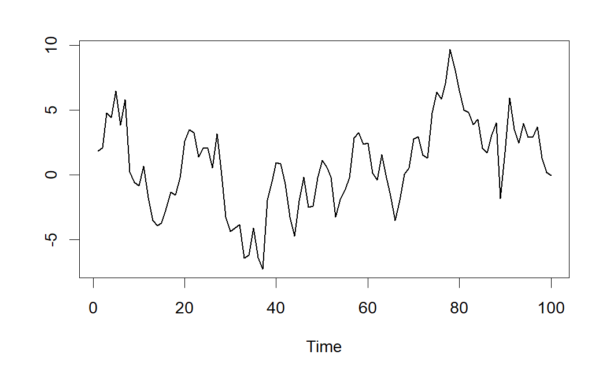
A continuación se muestran las correlaciones simples y parciales estimadas a partir de la serie \(AR(1)\) simulada.
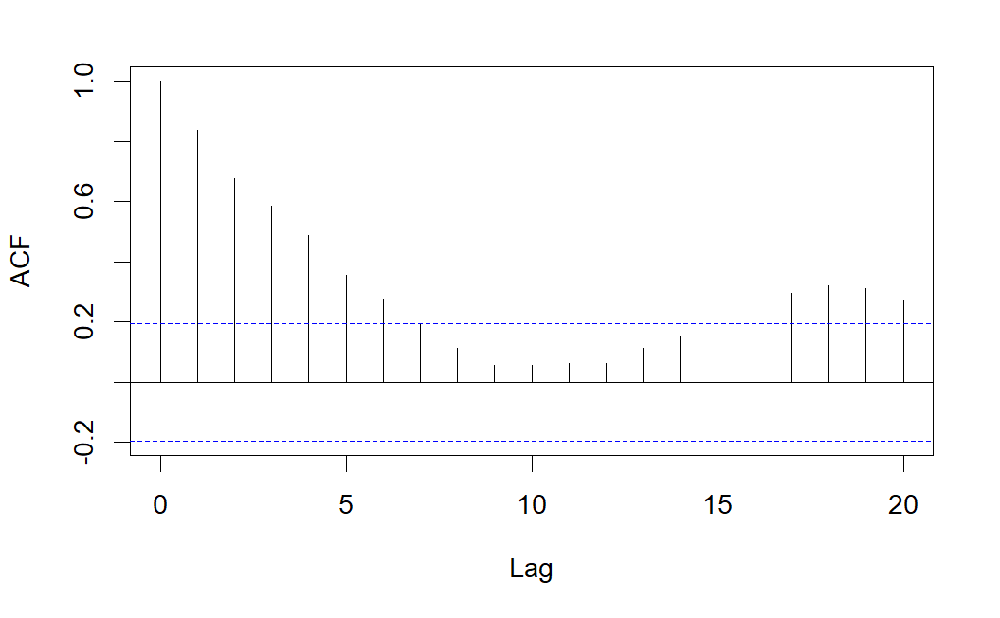
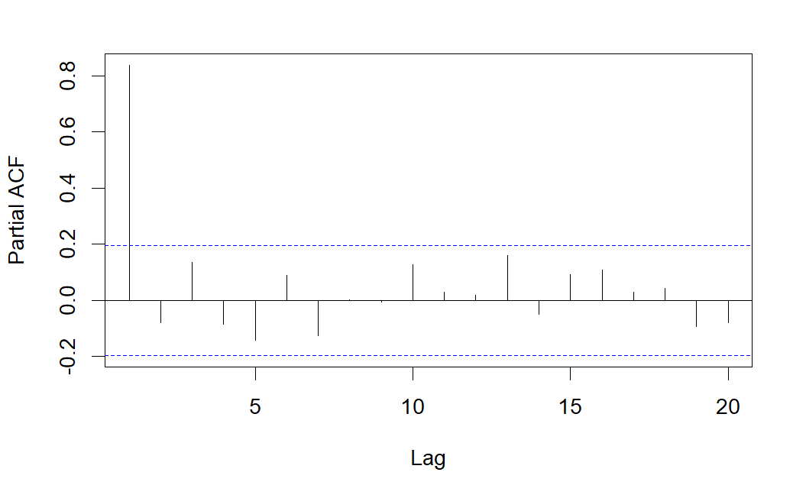
Como se observa, el correlograma simple presenta varias correlaciones significativas decreciendo de forma sinusoidal, pero sólo es significativa la correlación parcial correspondiente al retardo 1, lo que indica que se trata de un modelo \(AR(1)\).
7.6 Modelos de medias móviles, MA(q)
Otra alternativa de representación de la dependencia respecto al pasado consiste en considerar el valor actual como el resultado de la combinación de \(q\) factores aleatorios independientes entre si más una perturbación aleatoria contemporánea al modelo:
\[ X_t=\varepsilon _t+b_1\varepsilon _{t-1}+b_2\varepsilon _{t-2}+...+b_q\varepsilon _{t-q} \]
donde \(\varepsilon_t\) es un ruido blanco gaussiano. Al modelo anterior se le denomina proceso de medias móviles.
Nota: Dependiendo del software usado, la notación usada para representar los modelos MA(q) puede variar considerando los coeficientes \(b_j\) cambiados de signo. En nuestro caso, usaremos la notación usual del software R.
Obviamente, se tiene:
\[ \begin{aligned} \mathbb{E}(X_t) &= 0 \\ \operatorname{Var}(X_t) &= \sigma_\varepsilon^2 \, (1 + b_1^2 + b_2^2 + \dots + b_q^2) \end{aligned} \]
Utilizando el operador de retardos tendremos:
\[ X_t=(1+b_1B+b_2B^2+...+b_qB^q)\varepsilon _t \]
o equivalentemente:
\[ X_t=\left[ b_q(B)\right] \varepsilon _t \]
donde el polinomio \(b_q(x)=(1+b_1x+b_2x^2+...+b_qx^q)\) recibe el nombre de polinomio característico del proceso de medias móviles.
Estos procesos siempre son estacionarios (no necesitan condición sobre los parámetros \(b_i\)). Además, un proceso \(MA(q)\) se puede ver como un \(AR(\infty )\) siempre y cuando el proceso sea invertible (las raíces del polinomio característico deben estar fuera del círculo unidad).
\[ X_t=\left[ b_q(B)\right] \varepsilon _t\Longrightarrow \left[ b_q(B)\right] ^{-1}X_t=\varepsilon _t \]
7.6.1 Determinación del orden del modelo
Consideremos el proceso \(MA(q)\) de media nula:
\[ X_t=\varepsilon _t+b_1\varepsilon _{t-1}+b_2\varepsilon _{t-2}+...+b_q\varepsilon _{t-q} \]
Recordemos que la función de covarianzas viene dada por:
\[ \gamma_k=Cov(X_t, X_{t-k})=\mathbb{E}(X_t X_{t-k})-\mathbb{E}(X_t)\mathbb{E}(X_{t-k}) \]
Entonces, teniendo en cuenta que la función de medias es nula y que \((\varepsilon _t)_t\) es un proceso de ruido blanco gaussiano, la función de covarianzas para los procesos MA(q) quedaría:
\[ \gamma _k=\left\{ \begin{array}{lll} \sigma_\varepsilon ^2b_k+\sigma _\varepsilon ^2\sum_{j=k+1}^qb_{j-k}b_j & si & k=1,2,...,q \\ & & \\ 0 & si & k>q \end{array} \right. \]
de manera que las correlaciones serán nulas para retardos mayores de \(q\):
\[ \rho _k=0\quad \text{si }k>q \]
Este último resultado tendrá una gran importancia práctica porque nos permitirá identificar el orden del proceso \(MA\) al que se ajusta una serie temporal dada. Para ello, observaremos el autocorrelograma de la serie: el número de coeficientes que sean “significativamente” distintos de cero indica el orden del proceso \(MA\).
Veamos en la siguiente tabla un resumen de las características básica de los procesos \(AR\) y \(MA.\)
| AR(p) | MA(q) | |
|---|---|---|
| Expresión | \(\varepsilon_t = (1 - a_1 B - \dots - a_p B^p) X_t\) | \(X_t = (1 + b_1 B + \dots + b_q B^q)\varepsilon_t\) |
| Estacionario | Raíces del polinomio característico fuera del círculo unidad. | Siempre |
| Correlograma simple | Infinitos valores no nulos decreciendo de manera amortiguada | Valores no nulos hasta un retardo \(q\), el resto nulos |
| Correlograma parcial | Valores no nulos hasta un retardo \(p\), el resto nulos | Infinitos valores no nulos decreciendo de manera amortiguada |
7.6.2 Estimación de los parámetros del modelo
La estimación de los parámetros en modelos \(MA\) resulta más complicada que en modelos \(AR\) puesto que las ecuaciones son no lineales en los parámetros y para resolverlas es necesario recurrir a procedimientos iterativos.
Además, rara vez se trabaja en la práctica con un sistema \(MA\) puro, sino que se utiliza una combinación de modelos \(AR\) y \(MA\) dando lugar a los llamados modelos \(ARMA\) que tratamos en la siguiente sección.
7.6.3 Ejemplo de modelo MA(1)
Consideremos el modelo de Medias Móviles de orden 1 expresado mediante:
\[ X_t=\varepsilon_t + 0.8 \varepsilon_{t-1} \]
Una serie temporal generada por el proceso anterior, viene dada en el gráfico de la siguiente figura.
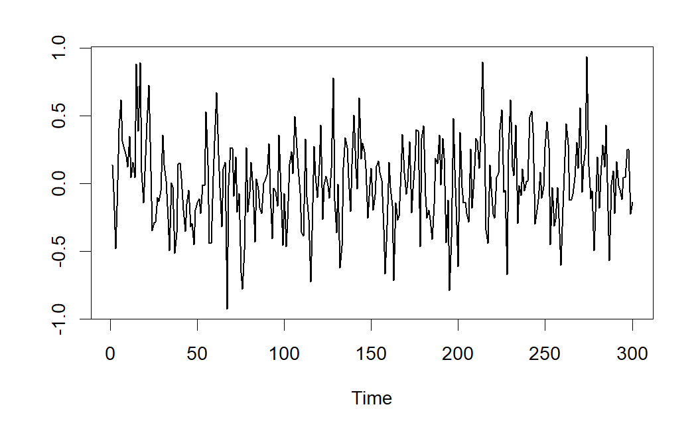
A continuación se muestran las correlaciones simples y parciales estimadas a partir de la serie \(MA(1)\) simulada.
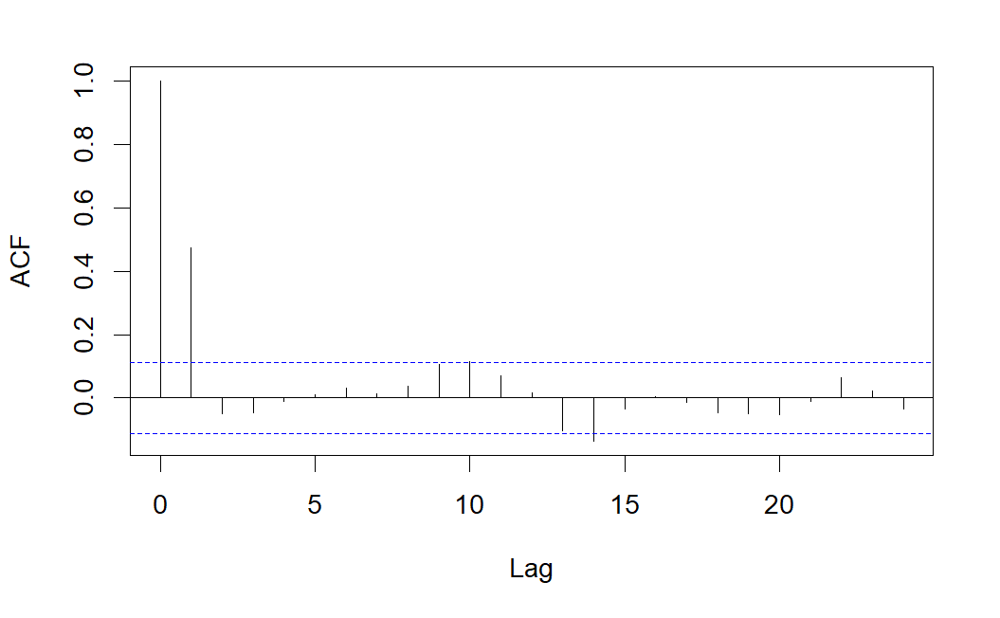

Como se observa, el correlograma simple presenta sólo una correlación significativa, mientras que el correlograma parcial presenta varias correlaciones parciales significativas, lo que indica que se podría tratarse de un modelo \(MA(1)\).
7.7 Modelos ARMA(p,q)
Existen procesos que encuentran su representación óptima mediante una combinación de los dos modelos anteriores. Tales modelos reciben el nombre de procesos autorregresivos de medias móviles (ARMA). Su expresión vendrá dada por:
\[ X_t-a_1X_{t-1}-a_2X_{t-2}-...-a_pX_{t-p}=\varepsilon _t+b_1\varepsilon _{t-1}+b_2\varepsilon _{t-2}+...+b_q\varepsilon _{t-q} \]
y usando el operador de retardos:
\[ (1-a_1B-a_2B^2-...-a_pB^p)X_t=(1+b_1B+b_2B^2+...+b_qB^q)\varepsilon _t \]
o equivalentemente:
\[ \left[ a_p(B)\right] X_t=\left[ b_q(B)\right] \varepsilon _t \]
donde \(a_p(x)\) y \(b_q(x)\) son los polinomios característicos.
El proceso \(ARMA\) es estacionario si las raíces del polinomio \(a_p(x)\) están fuera del círculo unidad, y será invertible si las raíces del polinomio \(b_q(x)\) están fuera del círculo unidad.
Como se observa, el modelo contiene \(p\) retardos del autorregresivo y \(q\) medias móviles, por consiguiente se representará por \(ARMA(p,q)\), es decir, el primer índice indicará el orden de la autorregresión y el segundo el de las media móviles.
Si se cumplen las condiciones para que el modelo sea considerado estacionario, todo modelo \(ARMA(p,q)\) se puede considerar como un \(MA(\infty)\) de la forma:
\[ X_t=\frac{(1+b_1B+b_2B^2+...+b_qB^q)}{(1-a_1B-a_2B^2-...-a_pB^p)}\varepsilon _t \]
7.7.1 Estimación de los parámetros del modelo
El problema de estimación de los parámetros \(ARMA\) a partir de \(n\) valores observados de la serie, \(x_1,x_2,\ldots,x_n\), resulta mucho más complicado que en modelos \(AR\) puesto que como veremos seguidamente las ecuaciones del sistema que se obtienen al aplicar mínimos cuadrados no son lineales. Veamos el caso más sencillo, un proceso \(ARMA(1,1).\) Este proceso viene caracterizado por:
\[ X_t=a_1X_{t-1}+b_1\varepsilon_{t-1}+\varepsilon_t \] los residuos \(e_t\) vendrán dados por:
\[ \begin{aligned} e_1 &= x_1 - \hat{x}_1 \\ e_2 &= x_2 - \hat{x}_2 = x_2 - a_1 x_1 - b_1 e_1 \\ &\vdots \\ e_n &= x_n - \hat{x}_n = x_n - a_1 x_{n-1} - b_1 e_{n-1} \end{aligned} \]
Obviamente \(e_3\) depende de \(e_2\) y este a su vez depende de \(e_1\). En general, los residuos contendrán potencias y productos cruzados de los parámetros \(a_1\) y \(b_1\) y por tanto no se tratará de un sistema lineal.
7.8 Procesos lineales no estacionarios: modelos ARIMA
7.8.1 Paseo aleatorio
Hemos visto en las secciones anteriores que los procesos \(MA\) finitos son siempre estacionarios y que los \(AR\) lo son si las raíces del polinomio característico están fuera del círculo unidad. Consideremos un proceso \(AR(1):\)
\[ X_t=a_1X_{t-1}+\varepsilon _t \]
Si \(\mid a_1\mid >1\), el proceso resulta “explosivo” (crece rápidamente), si \(\mid a_1\mid <1\), el proceso es estacionario, mientras que si \(\mid a_1\mid =1\), no es ni explosivo ni estacionario. Recordemos que este tipo de procesos reciben el nombre de paseos aleatorios. Como veremos en el siguiente apartado, se trata de un proceso integrado de orden 1 (puesto que su primera diferencia \(X_t-X_{t-1}=\varepsilon _t\) es estacionaria).
Observar que si denotamos al operador diferencia mediante:
\[ \Delta X_t=X_t-X_{t-1} \]
el paseo aleatorio (\(a_1=1\)) se escribe como:
\[ \Delta X_t=\varepsilon_t \]
7.8.2 Procesos ARIMA
Como acabamos de mostrar, un paseo aleatorio es un proceso \(AR(1)\) que no es estacionario, pues la raíz de su polinomio característico es unitaria. Pero si tomamos diferencias de orden 1, conseguimos que el proceso resultante sea estacionario. Esta idea puede generalizarse para cualquier proceso \(ARMA\), dando lugar a lo que se conocen como procesos autorregresivos integrados de medias móviles (\(ARIMA\)).
En el ejemplo del paseo aleatorio antes mencionado se ha obtenido un proceso estacionario aplicando el operador diferencia una vez.
Definición 7.1 (Modelo ARIMA(p,d,q)) Diremos que un proceso sigue un modelo \(ARIMA(p,d,q)\) si al aplicar \(d\) veces el operador diferencia se obtiene un proceso estacionario \(ARMA(p,q).\)
Así, si denotamos por:
\[ Y_t=\Delta ^dX_t=(1-B)^dX_t \]
a la serie obtenida al aplicar \(d\) veces el operador diferencia, si la serie original \(X_t\) seguía un modelo \(ARIMA(p,d,q)\) la nueva serie \(Y_t\) seguirá un modelo \(ARMA(p,q).\)
Por tanto, un modelo \(ARIMA(p,d,q)\) se puede expresar mediante: \[ [a_p(B)](1-B)^d X_t=[b_q(B)]\varepsilon_t. \]
De forma extendida:
\[ (1-a_1B-a_2B^2-...-a_pB^p)(1-B)^dX_t=(1+b_1B+b_2B^2+...+b_qB^q)\varepsilon_t \]
7.9 Identificación del modelo, validación y predicciones
Una vez descritas algunas de las propiedades más importantes de los modelos AR, MA, ARMA y ARIMA, vamos a estudiar cómo identificar el proceso estocástico del que procede la serie en estudio.
Podemos decir que el objetivo concreto perseguido a lo largo de este tema es intentar identificar el proceso ARIMA(p,d,q) que probablemente haya generado nuestra serie. Como es habitual, debemos comenzar realizando un análisis descriptivo previo de la serie que incluya detección de outliers. En el proceso de identificación del proceso generador de la serie seguiremos las siguientes etapas:
Analizar la estacionariedad de la serie y determinar el parámetro \(d\).
Determinar el orden de la parte autorregresiva (parámetro \(p\)) y de la parte media móvil (parámetro \(q\)).
Estimar los coeficientes del modelo: parámetros \(a_i\), \(b_j\) y \(cte\).
Determinar los residuos \(e_t = \widehat{\varepsilon }_t\) y validar el modelo.
Realizar predicciones.
7.9.1 Análisis de la estacionariedad de la serie
La primera etapa en la identificación del proceso generador de la serie consiste en determinar si la serie (proceso generador) es estacionaria. Como ya adelantamos en un apartado anterior, los incumplimientos de la estacionariedad suelen deberse a que la función de medias o la función de varianzas no resulten constantes.
Como herramienta para verificar la estacionariedad en varianza, podemos usar la representación gráfica de la serie: si observamos que las fluctuaciones de la serie se amplifican con el tiempo o con el nivel de la serie, será indicativo de que la función de varianzas no permanece constante.
En el caso de que la serie no sea estacionaria en varianza, se suele realizar una transformación de Box-Cox, siendo la más frecuente tomar logaritmos neperianos en los datos para conseguir varianza constante.
Una vez conseguida la estacionariedad en varianza, analizaremos si es estacionaria en media. Como herramienta para verificar la estacionariedad en media, podemos usar la representación gráfica de la serie: si la trayectoria de la serie oscila aleatoriamente alrededor de un valor constante, será indicativo de que la función de medias es constante, pero si observamos que el nivel de la serie varía a lo largo del tiempo, será indicativo de no estacionariedad en media.
En el caso de que la serie no sea estacionaria en media, en general se conseguirá que se convierta en estacionaria tomando diferencias de orden \(d\). Por ejemplo, si observamos tendencia lineal en la serie, tomando diferencias de orden 1 conseguiremos un nivel constante de la serie, y si observamos tendencia cuadrática, tomando diferencias de orden 2 se conseguirá la estacionariedad en media.
Por otra parte, también podemos observar el autocorrelograma de la serie: si las correlaciones estimadas no decrecen rápidamente con el retardo, podría indicarnos que el proceso generador tiene una raíz del polinomio característico igual a uno (paseo aleatorio) y por tanto no es estacionario. En estos casos se suelen tomar diferencias de orden uno y se vuelve a observar el autocorrelograma. En general basta con tomar diferencias de orden uno o dos para lograr la estacionariedad.
7.9.2 Determinación del orden de la parte AR y de la parte MA
Como herramientas básicas para determinar los órdenes \(p\) y \(q\) del modelo ARMA se suelen utilizar tanto el correlograma simple de la serie como el correlograma parcial.
Para establecer algunas pautas a la hora de determinar los valores de \(p\) y \(q\), debemos recordar las propiedades de los modelos AR y MA estudiadas en apartados anteriores.
- En un modelo \(AR(p)\), las correlaciones parciales teóricas son nulas para retardos mayores de \(p\). Sin embargo, las correlaciones teóricas nunca se hacen cero, pero decaen rápidamente a partir del retardo \(p.\)
Por tanto, si se trata de un modelo autorregresivo, el orden \(p\) se puede determinar a partir del correlograma parcial identificando los valores significativos del mismo.
- En un modelo \(MA(q)\), las correlaciones teóricas son nulas para retardos mayores de \(q\). Sin embargo, las correlaciones parciales teóricas nunca se hacen cero, pero decaen rápidamente a partir del retardo \(q.\)
Por tanto, si se trata de un modelo de medias móviles, el orden \(q\) se puede determinar a partir del correlograma simple identificando los valores significativos del mismo.
- En un modelo \(ARMA(p,q)\) tanto las correlaciones como las correlaciones parciales teóricas nunca se hacen cero.
Por tanto, si se trata de un modelo ARMA, será difícil identificar los órdenes \(p\) y \(q\), puesto que no se produce un corte ni en el autocorrelograma simple ni en el parcial. Podremos al menos proponer algunos modelos como candidatos de partida y posteriormente valorar si son reducibles.
Evidentemente, si trabajáramos con las correlaciones y correlaciones parciales teóricas} el proceso de identificación se simplificaría bastante. Sin embargo, en la práctica siempre trabajaremos con las correlaciones y correlaciones parciales estimadas a partir de la serie en estudio, de manera que el problema de identificación del modelo resulta todavía más complejo. De hecho, en muchas ocasiones el autocorrelograma estimado a partir de la serie suele presentar ciertas oscilaciones que no se corresponden con el modelo teórico.
Otro factor importante a la hora de determinar los órdenes de la parte autorregresiva y de medias móviles es el tamaño de la serie. La identificación será más fácil cuanto mayor sea el tamaño de la serie. En este sentido se han realizado simulaciones que muestran una gran diferencia entre las correlaciones (parciales) teóricas y las estimadas para series de tamaño pequeño (inferior a 60 observaciones).
7.9.3 Estimación de los coeficientes del modelo
Una vez determinados los órdenes \(p\) y \(q\) del modelo ARMA, necesitamos estimar los coeficientes \(a_i\) y \(b_j\) del modelo:
\[ X_t-a_1X_{t-1}-a_2X_{t-2}-...-a_pX_{t-p}= \varepsilon _t+b_1\varepsilon _{t-1}+b_2\varepsilon _{t-1}+...+b_q\varepsilon _{t-q} \]
Además, debemos estimar la constante del modelo, en caso de que éste la incluya.
La estimación de los parámetros se puede realizar minimizando la suma de cuadrados residual o bien maximizando la verosimilitud, dando ambos procedimientos resultados similares (aunque no iguales). Como hemos comentado en secciones anteriores, si el modelo contempla parte MA será necesario resolver sistemas de ecuaciones no lineales. Por ese motivo, diferentes softwares pueden mostrar soluciones distintas para una misma serie de dependiendo del algoritmo de resolución empleado.
En nuestro caso, realizaremos la estimación de los coeficientes del modelo haciendo uso del software R, que además suele incluir (como en el caso de la regresión lineal múltiple) contrastes sobre la significación de cada uno de los parámetros \(a_i\), \(b_j\), así como de la constante. Estos contrastes nos serán de gran utilidad a la hora de identificar el modelo generador de la serie. En este contexto también haremos uso del principio de parsimonia, según el cual debemos seleccionar como modelo óptimo aquel que contenga menor número de parámetros entre todos los modelos considerados adecuados.
7.9.4 Validación del modelo: análisis de los residuos
Para que el modelo propuesto en la etapa anterior sea adecuado, es necesario que los residuos (diferencia entre los valores observados de la serie y los ajustados por el modelo propuesto) se comporten como un ruido blanco gaussiano. Por tanto, la validez del modelo propuesto pasa por verificar las siguientes hipótesis sobre los residuos:
Los residuos se comportan como una distribución normal (hipótesis de normalidad).
Los residuos tienen varianza constante (hipótesis de homocedasticidad).
Los residuos son independientes (hipótesis de independencia).
Esta validación coincide con la realizada en el caso de los modelos de regresión, por lo que se pueden usar procedimientos similares.
Por ejemplo, la normalidad se puede verificar mediante contrastes no paramétricos como los de Kolmogorov-Smirnov o de Shapiro-Wilks, o bien a través de métodos gráficos.
Por otra parte, podemos contrastar la homocedasticidad observando el gráfico de dispersión de residuos frente a valores ajustados o bien mediante el gráfico de los residuos frente al tiempo: estos gráficos deben mostrar que los residuos se situan aleatoriamente alrededor del cero, dentro de una banda de amplitud constante.
Con respecto a la independencia de los residuos, haremos uso del autocorrelograma: éste no debe presentar ninguna correlación significativa, es decir, han de ser todas prácticamente nulas para que los residuos se supongan independientes.
7.9.5 Bondad del ajuste y selección del mejor modelo
Una medida usual para cuantificar la bondad de un ajuste consiste en calcular la suma de cuadrados residual del modelo ajustado. Por ejemplo, en análisis de regresión múltiple, se puede utilizar esta medida para determinar lo “bueno” que es el ajuste realizado.
Por tanto, un primer criterio para determinar el “mejor” modelo consistiría en seleccionar, dentro de los modelos considerados válidos por verificar las hipótesis de los residuos, aquel modelo que presente una menor suma de cuadrados residual. Sin embargo, este criterio no tiene en cuenta ni el número de parámetros del modelo (órdenes \(p\) y \(q\)), ni la magnitud de las observaciones. Es decir, si realizamos transformaciones en los datos, el modelo resultante no es comparable con el original a través de los residuos (por ejemplo, una transformación logarítmica siempre proporcionará residuos de menor magnitud que para los datos originales).
Existen otros criterios para la selección de modelos, entre los que destacaremos los criterios de información AIC, AIC corregido y BIC, basados en la verosimilitud y que tienen en cuenta el número de parámetros a estimar.
Es importante destacar que estos criterios de información no son adecuados para seleccionar el orden de la diferenciación (parámetro \(d\)), pues los valores de la verosimilitud no son comparables para modelos con diferentes órdenes de diferenciación. Por tanto, es conveniente que la selección del orden \(d\) se realice de otra forma (por ejemplo, manualmente), y posteriormente se pueden usar los criterios AIC y BIC para determinar los órdenes \(p\) y \(q\).
La selección del modelo se puede realizar de manera “manual” (realizando los pasos indicados al principio de la sección), o bien utilizando funciones que realizan la selección de forma automática. En la siguiente figura, extraída de Hyndman and Athanasopoulos (2021), se muestran los pasos a seguir en las dos alternativas:

7.9.6 Predicciones
Una vez validado el modelo, el siguiente paso y fin último de nuestro estudio es realizar predicciones para valores futuros de la variable. Para obtener esas previsiones haremos uso del modelo teórico que se ha identificado como adecuado, proyectándolo hacia el futuro.
Además, las predicciones sirven para contrastar la adecuación de nuestro modelo: las discrepancias sistemáticas entre predicciones y valores observados cuestionarán la validez de nuestro modelo.
Supongamos que hemos observado la serie hasta un instante \(T\), y denotemos por \(\hat{x}_{T+h}\) a la predicción de la serie en el instante \(T+h\) a partir del modelo ajustado. La forma de proceder será la siguiente:
- La estimación del término aleatorio (ruido) para instantes anteriores a \(T\) se corresponde con el error de previsión a un periodo vista, es decir:
\[ \widehat{\varepsilon }_t=x_t-\hat{x}_t\quad t\leq T \]
- Los términos de ruido posteriores al instante \(T\) se considerarán nulos:
\[ \widehat{\varepsilon }_t=0\quad t>T \]
- Los valores de la serie para instantes posteriores a \(T\) que se requieran en el cálculo de nuevas predicciones, se sustituyen por sus propias predicciones:
\[ x_{T+h}=\hat{x}_{T+h}\quad h=1,2,... \]
donde el parámetro \(h\) representa el horizonte de predicción.
Veámos a modo de ejemplo cómo proceder a la hora de realizar predicciones con dos modelos concretos:
Como se observa, si una serie incorpora medias móviles, la influencia directa del ruido se transmite tantos periodos hacia adelante como orden del proceso \(MA\). A partir de este instante, la influencia de estos términos es indirecta a través de los valores obtenidos.
Nota: Las expresiones para obtener las predicciones puntuales permiten observar que, al aumentar el horizonte de predicción, se recurre a valores estimados en lugar de datos reales, lo que se traduce en mayores errores de predicción. La metodología ARIMA permite, además de obtener predicciones puntuales como hemos descrito arriba, obtener intervalos de predicción para instantes futuros.
7.9.7 Un ejemplo de modelo ARMA con R
Para ilustrar algunos de los conceptos vistos en este tema, primero vamos a generar una serie temporal a partir de un modelo ARMA, proporcionando nosotros mismos tanto los órdenes \(p\) y \(q\), como el valor de los coeficientes del modelo. Posteriormente, analizaremos la serie simulada para determinar el modelo generador, comprobando que se asemeja al modelo ARMA fijado en la simulación. Evidentemente, cuanto mayor sea el tamaño de la serie simulada, los resultados del ajuste serán más próximos al modelo generador real.
Concretamente, vamos a generar una serie a partir del siguiente modelo \(ARMA(p=2,q=1)\):
\[ X_t = 0.9 X_{t-1} - 0.5 X_{t-2} + 0.7 \varepsilon_{t-1} + \varepsilon_t \]
donde \(\varepsilon_t\) representa un ruido blanco gaussiano.
set.seed(1234)
serie_simulada <- arima.sim(n = 1000,
list(ar = c(0.9, -0.5), ma = c(0.7)),
sd = 1)ts.plot(serie_simulada)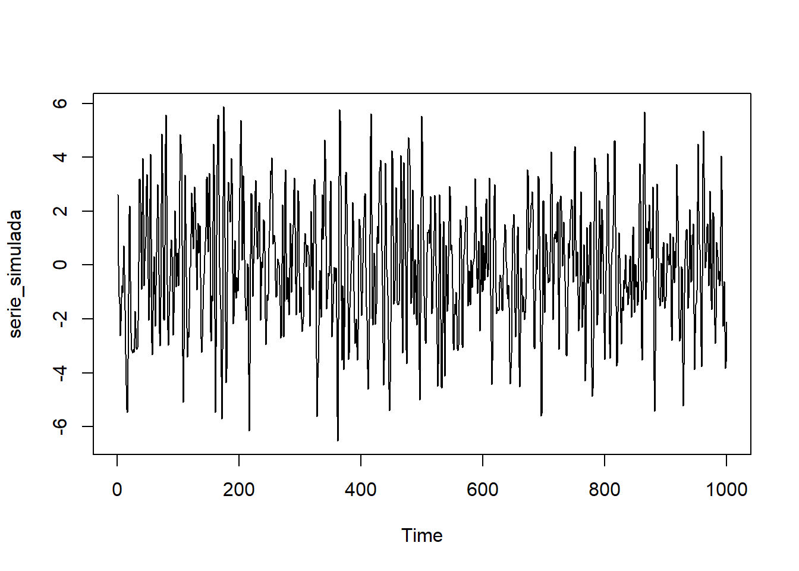
acf(serie_simulada)
pacf(serie_simulada)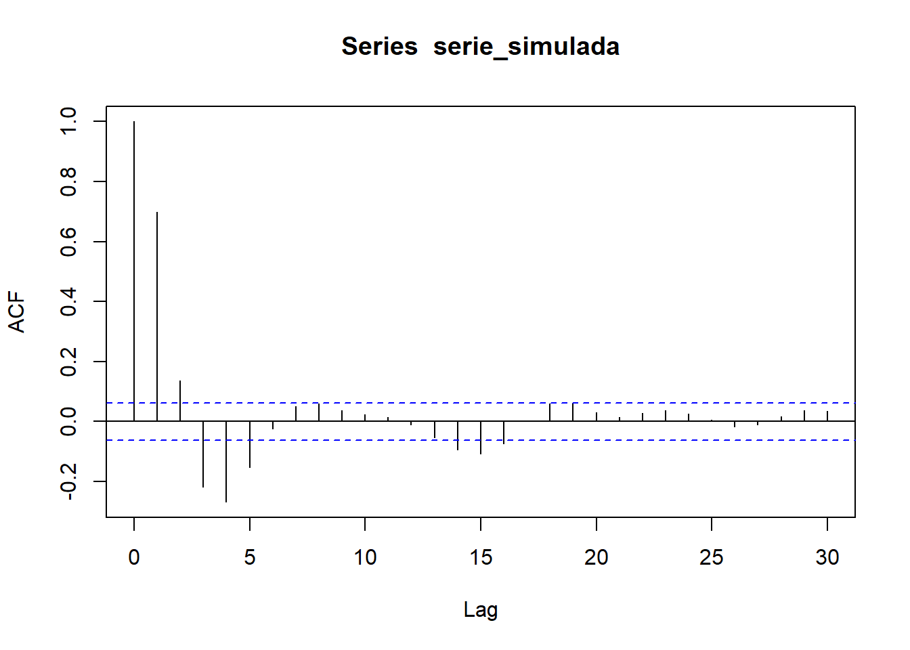
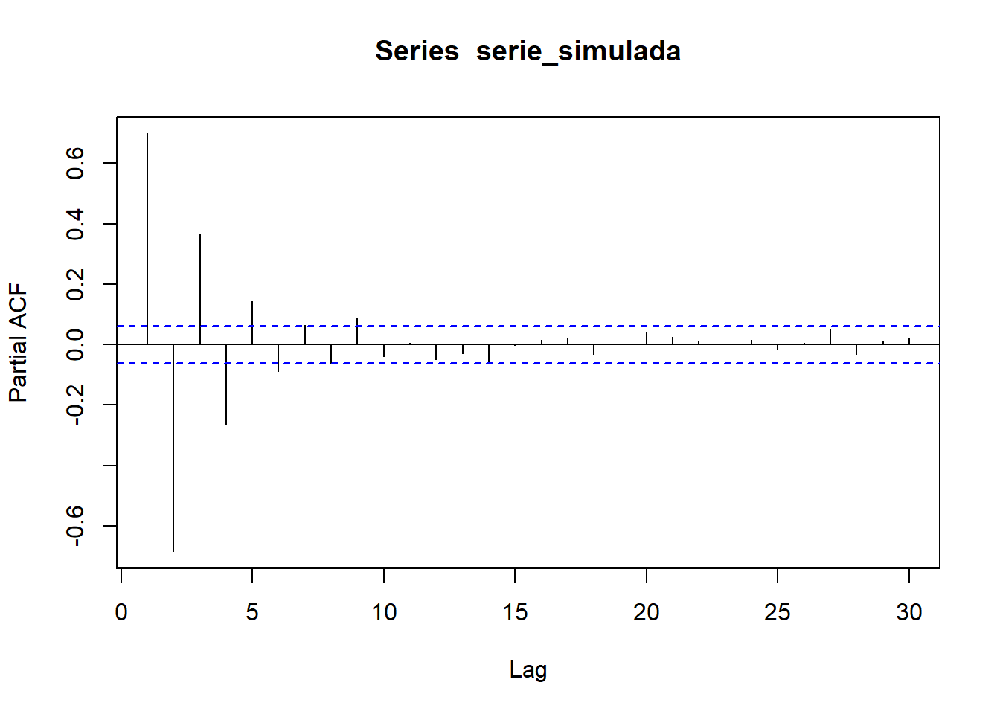
Observamos que la serie es estacionaria (en media y varianza), además centrada (media cero). En los correlogramas vemos bastantes correlaciones simples y parciales significativas, lo que nos sugiere que el proceso generador probablemente contenga tanto parte AR (autorregresiva) como parte MA (medias móviles). Nótese que es especialmente significativo el retardo 1 en el correlograma simple y los retardos 1 y 2 en el correlograma parcial, lo que nos sugiere un modelo \(ARMA(2,1)\), es decir, un \(ARIMA(2,0,1)\).
modelo_ARIMA201 <- arima(serie_simulada,
order = c(2,0,1),
include.mean = FALSE)
modelo_ARIMA201
Call:
arima(x = serie_simulada, order = c(2, 0, 1), include.mean = FALSE)
Coefficients:
ar1 ar2 ma1
0.8900 -0.4853 0.7366
s.e. 0.0311 0.0307 0.0248
sigma^2 estimated as 0.9965: log likelihood = -1418.74, aic = 2845.49Obtenemos estimaciones de los coeficientes muy parecidos a los coeficientes reales usados en la simulación.
Podemos probar cómo sería el ajuste si consideramos algún orden superior en la parte AR y/o en la MA.
modelo_ARIMA301 <- arima(serie_simulada,
order = c(3,0,1),
include.mean = FALSE)
modelo_ARIMA301
Call:
arima(x = serie_simulada, order = c(3, 0, 1), include.mean = FALSE)
Coefficients:
ar1 ar2 ar3 ma1
0.8938 -0.4910 0.0048 0.7340
s.e. 0.0467 0.0599 0.0437 0.0345
sigma^2 estimated as 0.9965: log likelihood = -1418.74, aic = 2847.47modelo_ARIMA202 <- arima(serie_simulada,
order = c(2,0,2),
include.mean = FALSE)
modelo_ARIMA202
Call:
arima(x = serie_simulada, order = c(2, 0, 2), include.mean = FALSE)
Coefficients:
ar1 ar2 ma1 ma2
0.8833 -0.4819 0.7446 0.0080
s.e. 0.0657 0.0431 0.0737 0.0693
sigma^2 estimated as 0.9965: log likelihood = -1418.74, aic = 2847.47modelo_ARIMA302 <- arima(serie_simulada,
order = c(3,0,2),
include.mean = FALSE)
modelo_ARIMA302
Call:
arima(x = serie_simulada, order = c(3, 0, 2), include.mean = FALSE)
Coefficients:
ar1 ar2 ar3 ma1 ma2
0.7350 -0.3505 -0.0712 0.8932 0.1180
s.e. 1.3579 1.2106 0.6614 1.3573 0.9989
sigma^2 estimated as 0.9965: log likelihood = -1418.73, aic = 2849.46Obsérvese que al aumentar el orden de la parte AR y/o la MA, obtenemos valores de AIC mayores (peores modelos), indicativo de que el modelo óptimo es el \(ARMA(2,1)\).
En el manual de prácticas correspondiente a este tema se muestran varios ejemplos detallados de ajustes con metodología ARIMA usando R.
7.10 Modelos ARIMA estacionales, SARIMA
El modelo SARIMA (Seasonal Autoregressive Integrated Moving Average) es una extensión de los modelos ARIMA que incorpora componente estacional. Es decir, variaciones que se repiten en intervalos regulares de tiempo (por ejemplo, mensuales, trimestrales o anuales).
El modelo se denota mediante \(SARIMA(p,d,q)(P,D,Q)_L\), donde \((p,d,q)\) representan los órdenes de la parte ARIMA no estacional y \((P,D,Q)\) representan los mismos conceptos pero para la parte estacional. El parámetro \(L\) representa la periodicidad estacional (por ejemplo, 12 para datos mensuales con un patrón anual). El modelo completo combina tanto los componentes estacionales como no estacionales para capturar la estructura completa de la serie temporal.
La estimación de un modelo SARIMA sigue los mismos principios que los modelos ARIMA, pero con la adición de los componentes estacionales. Los pasos típicos incluyen:
Utilizar gráficos de la serie temporal, de las funciones de autocorrelación (ACF) y autocorrelación parcial (PACF), para determinar los posibles valores de los órdenes \((p,d,q)\) y \((P,D,Q)\).
Estimar los parámetros del modelo utilizando métodos como la máxima verosimilitud.
Analizar los residuos del modelo para asegurarse de que no presentan autocorrelación significativa y que son aproximadamente normales.
Como es habitual, para seleccionar el modelo SARIMA más adecuado, se pueden utilizar criterios de información como el AIC, el AIC corregido y el BIC. Una vez estimado y validado el modelo SARIMA, se pueden realizar predicciones futuras.
En el manual de prácticas correspondiente a este tema se muestran ejemplos de ajustes SARIMA usando R.
Nota: La comparativa entre modelos ARIMA (o bien SARIMA) y ETS no debe realizarse usando los criterios de información AIC o BIC, porque son modelos de distinta clase y la verosimilitud se calcula de forma diferente en cada caso. En su lugar, conviene compararlos realizando validación cruzada y calculando medidas de bondad de ajuste como RMSE, MAE o MAPE.